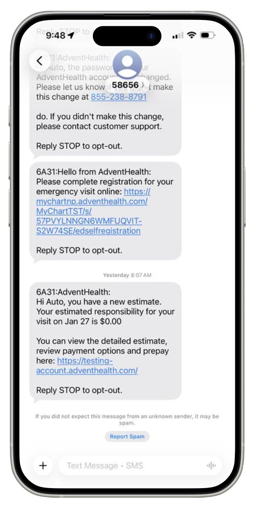

5:58
Case study
ED Access Timing
When AdventHealth moved its Emergency Department bedside experience from hospital tablets to a Bring Your Own Device model, patients were suddenly expected to download an app, create an account, verify their identity, complete MFA, and sign in before they could access any bedside features. In the ED, that full registration gauntlet was landing on people who were stressed, often on poor cellular connections, and increasingly relying on nurses to get through it.
tl;dr
- The median onboarding time was 5:58, just over the 5-minute leadership benchmark, with a range of 3:05 to 8:20 depending on device, network, and user confidence.
- The app download handoff added a median of 1:49, and up to 3:06 in worst-case runs, making it a significant and discrete friction point.
- The real bottleneck was not the app itself, but a registration model designed for convenience-driven digital consumers rather than patients in acute care.
- Nurses were absorbing the failure cost, becoming de facto IT support and adding stress to an already high-pressure environment.
- A code-based bypass is now in testing, and early results show a meaningful reduction in the time nurses spend troubleshooting onboarding with patients.
What We Learned
The BYOD Shift Created a Friction Gap No One Had Fully Mapped
AdventHealth's Emergency Department had previously provided patients with pre-registered tablets, giving them immediate access to digital bedside features. When the model shifted to BYOD, the assumption was that patients would use their own phones, but the onboarding path they were handed was not built for an ED context. It was the standard AdventHealth account creation flow: designed for a patient sitting at home with a stable connection and time to spare. In the ED, neither of those things is true.
Mapping the full journey made the gap visible. From the moment a patient received an SMS invite, they had to open a link, create an account, provide personal information, verify their email, set up MFA, download the AdventHealth app, log in a second time, and verify their identity again, all before seeing a single Bedside feature.

Timing flow
Where the onboarding journey was losing time
Median completion time from SMS invite to first successful Bedside access:
5:58
Open invite
Account completion
Begin download
Install / open
Sign into app
0:27
Start
The invite and initial handoff happened quickly; the delay started once
registration began.
3:36
Account completion
Verification, MFA, and repeated identity steps consumed the largest
stretch of the journey.
1:55
App handoff to access
The redirect into download, install, and re-entry added a second
concentrated block of friction.
Across 10 proxy runs, that journey took a median of 5:58, with the account creation phase alone accounting for 3:36 of that time. The study turned a vaguely understood pain point into a concrete sequence of delays that leaders could finally discuss step by step.
Timing buckets
The friction was concentrated in two measurable places
5:58
Total time to completion
1:55
App download to MCB ED
3:36
Account completion
The Handoff Penalty Was Real and Discrete
One of the study's two core questions was whether the app download handoff, the moment patients are redirected from the web registration flow into the App Store to download the AdventHealth app, added meaningful time. It did. The handoff added a median of 1:49, and in some runs as much as 3:06.
This was not just an inconvenience. It was a context switch that interrupted momentum at the worst possible moment, right after patients had already completed a multi-step registration process. The timing study made that delay visible as its own problem rather than just another small annoyance inside the broader flow.
Because the handoff could be measured on its own, it became much easier to argue for removing it entirely rather than trying to smooth it over with better copy or more onboarding guidance.
Connectivity Made Everything Worse, and Nurses Were Caught in the Middle
Test runs were conducted on devices without Wi-Fi enabled, a deliberate choice to reflect the actual ED environment, where patients are unlikely to be connected to the hospital network. The timing data captured under these conditions is more representative of what real patients experience, and it showed. Cellular-only runs trended longer, and qualitative notes flagged slow load times and delayed SMS verification codes as key friction drivers.
Human cost
The timing numbers made the case to leadership. But the nurse burden was what made it urgent. Every stuck patient was a nurse pulled away from clinical care. That argument moved faster than any data chart.
Beyond the timing data, one of the most important things this study surfaced was the human cost of a broken onboarding flow. ED nurses, whose primary job is clinical care, had become informal IT support for patients trying to navigate the registration process. Every stuck patient was a nurse pulled away from something more important.
The Root Problem Was a Registration Flow Designed for the Wrong Context
The account creation flow was not poorly designed in absolute terms. It was designed for the wrong setting. In an ED, patients have already handed over their personal information when they were admitted. Asking them to re-enter that same information through a multi-step digital registration process is not just slow, it is redundant.
That redundancy created a perception mismatch between the care patients had already received and the digital experience being offered to complement it. The app was asking them to prove who they were all over again before they could reach something that should have felt like bedside support.
The study made it clear that the problem was deeper than onboarding polish. It was structural. A flow designed for convenience-driven digital consumers was being dropped into an acute-care setting where patients needed speed, simplicity, and continuity more than conventional account setup logic.
Outcome of the Research
The research made a direct case for two things: quantifying the current cost in time and friction, and pointing toward a fundamentally different entry model. The recommended direction was a location-based, code-driven access path. Patients receive a unique code tied to their room upon admission, which routes them directly into MyChart Bedside ED features without requiring full account registration.
This approach uses information the hospital already has, eliminates redundant data entry, and bypasses the app download handoff entirely for first-time access. That made it a much better match for an acute-care context than the existing registration-first model.
Implications
- Use a code-based entry model that routes patients directly into bedside features without full account creation.
- Remove redundant data entry when the hospital already has the patient context needed for access.
- Reduce the troubleshooting burden placed on nurses by eliminating the highest-friction parts of the journey.
The code-based access model is currently in testing. Early results are meaningful: the time nurses spend troubleshooting onboarding with patients has decreased noticeably. The process is not entirely hands-off yet, but the volume of multi-step troubleshooting has been reduced, which means nurses are spending less time in an IT support role and more time on clinical care.
A note on methodology
Because the true Bedside ED SMS invite flow was not accessible during the study window, runs were conducted using an analog path beginning at adventhealth.com. The core steps, account creation, verification, MFA, app download, and app sign-in, were preserved. Timing benchmarks should be understood in that context and validated against the live invite flow when accessible.
Continue Exploring
Contact
If you’d like to talk through the study, I’m happy to share more context.
If you want to discuss the timing methodology, the BYOD shift, or what the code-based model looks like in practice — I’m happy to share more.
A good conversation is usually a better start than a formal intake form.